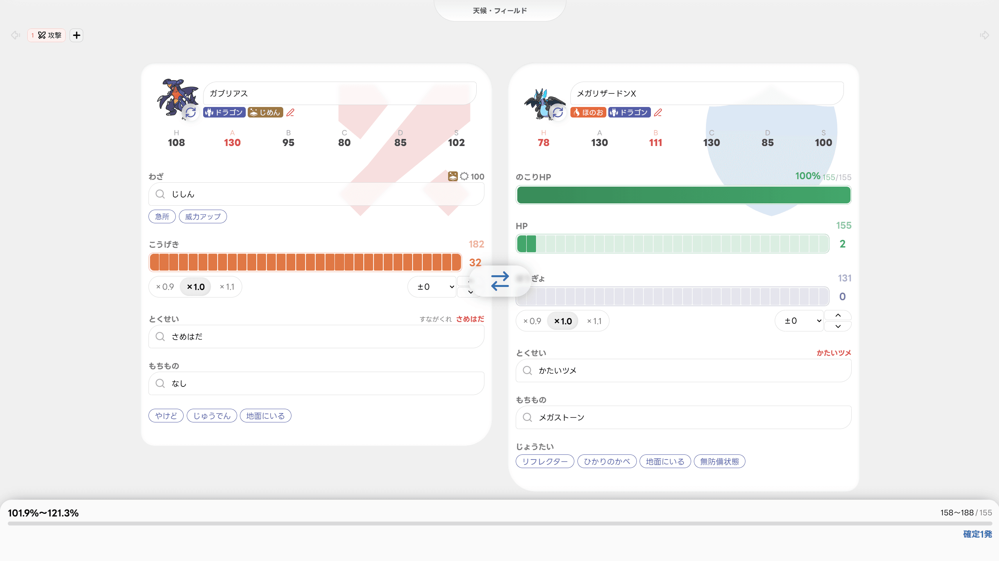
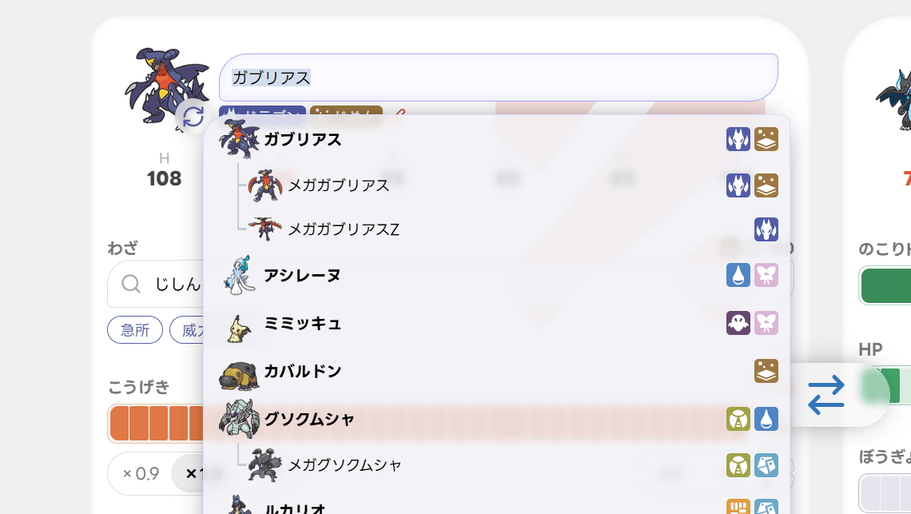
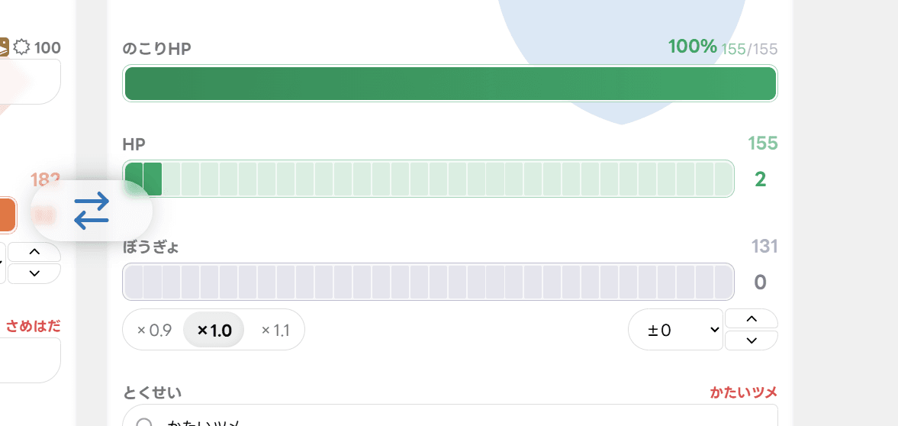
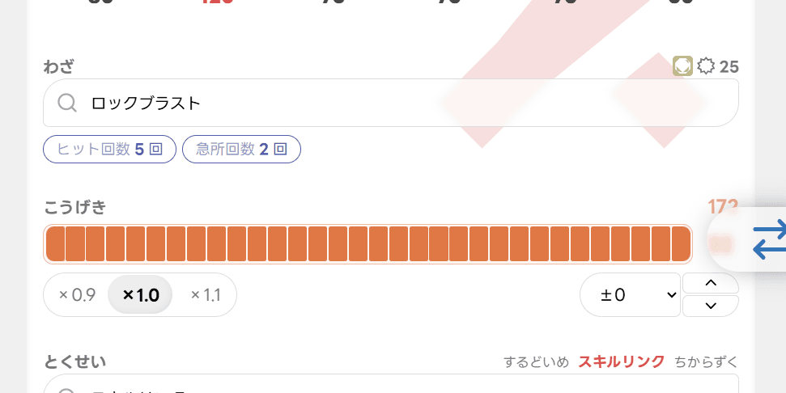
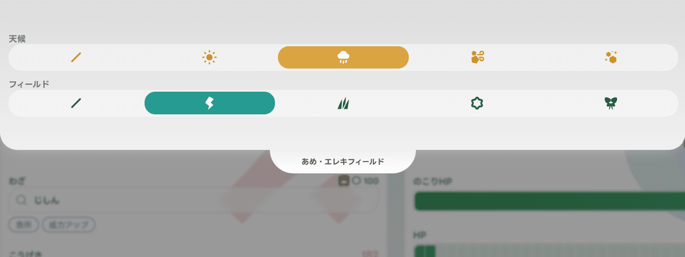
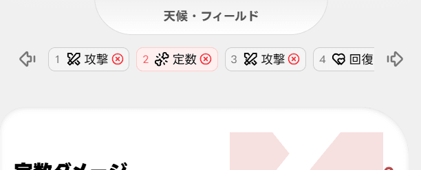
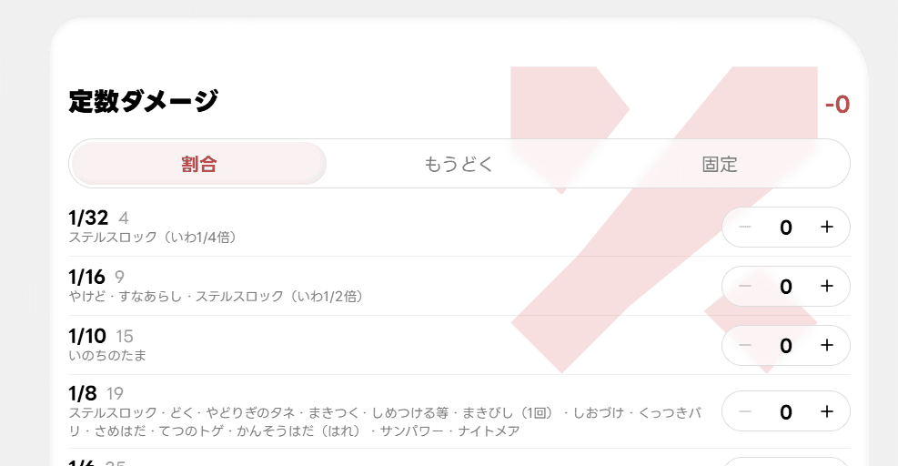
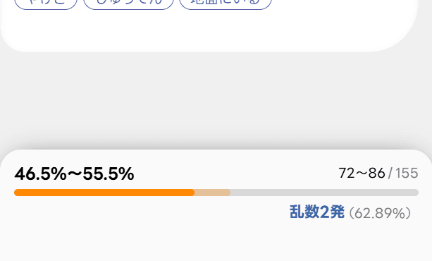
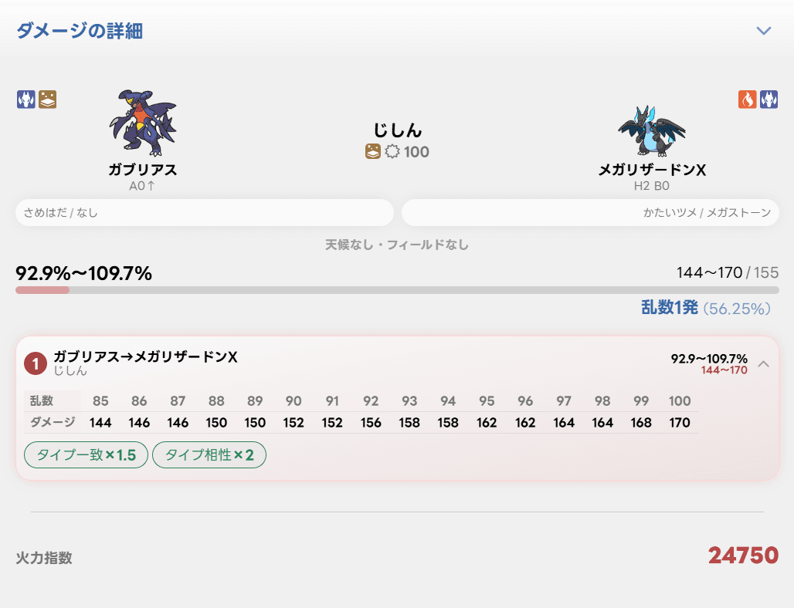

おしらせ
-
計算条件をURLで共有できるようになりました。ダメージの詳細の右上にある共有ボタンから、今の条件を開けるURLを送れます。
-
PokéFire を公開しました。
PokéFire ヘルプ
PokéFire は、ポケモンチャンピオンズのダメージと火力指数を計算するツールです。シングルバトルを前提に、乱数・確定数・加算計算・反動や回復までまとめて確認できます。
画面の見方
左側が攻撃側、右側が防御側のパネルです。スマートフォンでは横にスクロールするか、パネルの間の余白をタップすると切り替わります。

- 上部のタブ
- 加算計算の順番です。攻撃・定数ダメージ・定数回復を並べられます。
- 天候・フィールド
- 一番上のつまみをタップするか、ページの一番上で下にスワイプすると開きます。
- 攻守交代ボタン
- 2つのパネルの間に浮いているボタンです。
- 結果カード
- 画面下にいつも表示されている計算結果です。タップすると詳細が開きます。
ポケモンを選ぶ
ポケモン名の欄をタップすると一覧が開きます。一覧はシングルの使用率順で、メガシンカは元のポケモンのすぐ下に並びます。

- ひらがな・カタカナ・ローマ字・よく使われる略称で検索できます。
- Enter を押すと、一覧の一番上のポケモンに決まります。
- 選ぶと、使用率1位のとくせいと、使用率がいちばん高い攻撃技（攻撃側のみ）が自動で入ります。もちものは使用率1位がこのツールで扱えるものの場合だけ入り、それ以外は「なし」になります。
- 能力ポイントと性格は、ポケモンごとに前回の調整を覚えています。初めて選んだポケモンは H2・A32・C32・ほかは0 です。
フォルムチェンジ
ポケモンの画像をタップすると、同じ図鑑番号のほかの姿（メガシンカ・リージョンフォームなど）が並びます。数が多いときは横にスクロールできます。
タイプの変更
タイプの欄をタップするとタイプ選択が開き、タイプを付けたり外したりできます。「リセット」でそのポケモン本来のタイプに戻ります。
能力ポイント・性格・ランク

- 能力ポイント
- バーをタップするか横になぞって 0〜32 を指定します。右上に実数値が表示されます。
- 性格補正
- ×0.9・×1.0・×1.1 から選びます。
- ランク
- セレクトか上下ボタンで −6〜+6 を指定します。上がっていると赤、下がっていると青の枠になります。
- のこりHP
- 防御側は常に、攻撃側はふんか・しおふき・じたばた・きしかいせい・いのちがけ・がむしゃらのときに表示されます。バーをタップかなぞって指定します。
表示される能力は、選んだわざに合わせて切り替わります（物理なら攻撃側は A、防御側は H・B など）。
わざ
わざの欄をタップすると検索が開きます。上には選んでいるポケモンがよく使うわざが、使用率付きで並びます。
- 開いたときは前回の検索文字が全選択された状態なので、そのまま打ち直せます。
- Enter で一番上のわざに決まります。
- 右上の威力は、今の条件で変わった威力です。元より上がっていると赤字になります。
急所・威力アップ
「急所」で急所に当たったときの計算になります。こおりのいぶき・トリックフラワー・やまあらしは必ず急所なので、ONのまま鍵が付いて固定されます。「威力アップ」は、相手が地中にいるときのじしんなど、条件で威力が上がるわざのときだけ表示されます。
連続技

連続技では急所ボタンの代わりに「ヒット回数」「急所回数」が表示されます。タップで選ぶほか、ボタンの中から指を置いて横になぞると回数を変えられます（左端が最小、右端が最大）。
- 2〜5回のわざは2回、ネズミざんは10回が初期値です。スキルリンクなら5回で固定です。
- トリプルアクセルは、1〜3回目それぞれの「ヒット」「急所」を個別に切り替えられます。
とくせい・もちもの・じょうたい
- とくせい
- 候補から選ぶか、検索から選びます。条件付きで効くとくせい（もうか・マルチスケイルなど）には「発動」ボタンが付き、ON/OFFを切り替えられます。常に効くとくせいは鍵付きでONに固定されます。へんげんじざい・リベロでは「タイプ変更」ボタンで、今のわざのタイプになります。
- もちもの
- 検索から選びます。メガシンカのポケモンを選ぶと自動で「メガストーン」になります。メトロノームのときは「連続攻撃回数」で何回目の攻撃かを指定できます。
- じょうたい
- 攻撃側は「やけど」「じゅうでん」「地面にいる」、防御側は「リフレクター」「ひかりのかべ」「地面にいる」「無防備状態」を切り替えられます。からげんき・こんじょうのときは、やけどの半減が関係ないので鍵が付きます。
天候・フィールド

画面上部のつまみをタップするか、ページの一番上で下にスワイプすると開きます。上にスワイプするか、外側をタップすると閉じます。
- 選んでいるものをもう一度タップすると「なし」に戻ります。
- 天候は画面の上から、フィールドは下から、背景に色が付きます。
攻守交代
2つのパネルの間のボタンで、攻撃側と防御側のポケモンを入れ替えます。能力ポイント・性格・とくせい・もちものなどの調整は、それぞれのポケモンに付いたまま入れ替わります。定数ダメージ・定数回復のタブを選んでいる間は表示されません。
加算計算（タブ）

上部の「＋」で、攻撃・定数ダメージ・定数回復のタブを今のタブの次に追加できます。左右の矢印で選んでいるタブの順番を入れ替え、×で削除します。タブが2つ以上あると、結果は並び順どおりに当てたときの「ひんし率」になります。
- 防御側のポケモンはすべてのタブで共通です。どのタブで変えても全体がそのポケモン基準になります。
- 同じポケモンなら、もちもの・とくせい・能力ポイント・性格はタブ同士で共通です。
- タイプ・ランク・わざ・じょうたい・とくせいの発動は、タブごとに別々に持てます。
定数ダメージ・定数回復

定数のタブを選ぶと、攻撃側のパネルが専用の画面になります。防御側の最大HPを基準に計算し、右上に合計を表示します。
- 割合
- 1/32〜1/2 などの割合ごとに、受けた（回復した）回数を −0＋ で指定します。各行には当てはまる例（ステルスロック・たべのこしなど）が書いてあります。
- もうどく（ダメージのみ）
- 1〜15ターン目それぞれの回数を指定します。
- 固定
- 50ダメージ（ちきゅうなげ・ナイトヘッド）や10回復（オレンのみ）の回数と、「＋ 追加」で好きな量を入力できます。
回復は減っているHPの分までしか入らず、ひんしになった後は回復しません。
結果カード

- ダメージ
- 最大HPに対する割合と、実際のダメージ量です。
- HPバー
- 濃い部分が確実に残るHP、薄い部分が乱数次第で残るHPです。50%以上は緑、25%以上はオレンジ、それ未満は赤です。
- 判定
- 攻撃1つのときは「確定○発」「乱数○発（確率）」、タブが2つ以上のときは「ひんし率」を表示します。
ダメージの詳細

結果カードをタップすると下から開きます。上部をタップするか、一番上から下にスワイプすると閉じます。
- フロー
- タブの順に攻撃が並びます。攻撃をタップすると、その攻撃だけの結果が上に表示され、乱数表（85〜100%）と補正の一覧が開きます。∑を選ぶと全体の結果に戻ります。
- 補正の一覧
- ダメージを上げる補正は緑、下げる補正は赤で表示されます。
- 攻撃側の反動・回復
- 吸収わざ・反動わざ・いのちのたま・かいがらのすず・おおきなねっこ、相手のゴツゴツメット・さめはだなどによるHPの増減です。接触による反動は1回ごとに分けて表示されます。
- 火力指数
- 個別の攻撃を選んでいるときに表示されます。下の「計算の仕様」を参照してください。
- 共有
- 右上の共有ボタンで、今の計算条件（両方のポケモン・調整・わざ・タブ・天候・フィールドなど）をそのまま開けるURLを作れます。スマートフォンでは共有メニューが開き、パソコンではURLがコピーされます。
計算の仕様
- 実数値（レベル50）
- H = 種族値 + 75 + 能力ポイント
H以外 = (種族値 + 20 + 能力ポイント) × 性格補正（切り捨て） - ダメージ
- 第9世代のダメージ計算式に準拠しています。補正は 4096 を1倍とする方式で、各段階の丸め（切り捨て・四捨五入・五捨五超入）も本作の計算どおりに行います。
- 火力指数
- 補正後の攻撃の実数値 × 補正後の威力 × タイプ一致 × 天候 × 攻撃側の最終補正（いのちのたま・メトロノームなど）× 急所 × やけど。タイプ相性や相手のとくせい・もちもの・壁など、相手によって変わる補正は含みません。連続技は全ヒットの合計です。
- 表記
- %は小数第1位まで（四捨五入）、乱数○発の確率だけ小数第2位までです。
カウンター・ミラーコート・メタルバースト・ほうふく・はきだす・なげつける・ふくろだたきなど、一部のわざは計算できません。
データの出典
- わざ・とくせい・もちもの・ポケモンのデータは、GameWith の攻略情報をもとにしています。
- ポケモンの画像と検索用の略称は、ポケソルのデータを使用しています。
- 使用率は Pokémon Champions Battle Data のシングルのデータを使用しています（Battle data provided by Pokémon Champions Battle Data）。
- 英語名と日本語名の対応には PokéAPI のデータを使用しています。
PokéFire は非公式のファンツールです。株式会社ポケモン・任天堂・クリーチャーズ・ゲームフリークとは関係ありません。